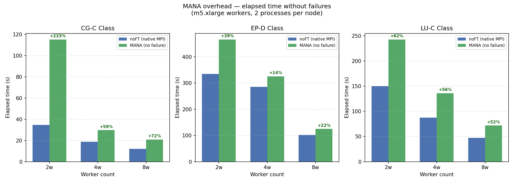
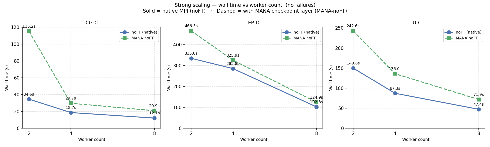
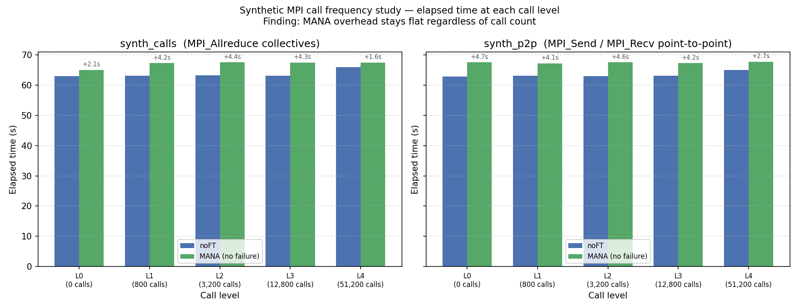
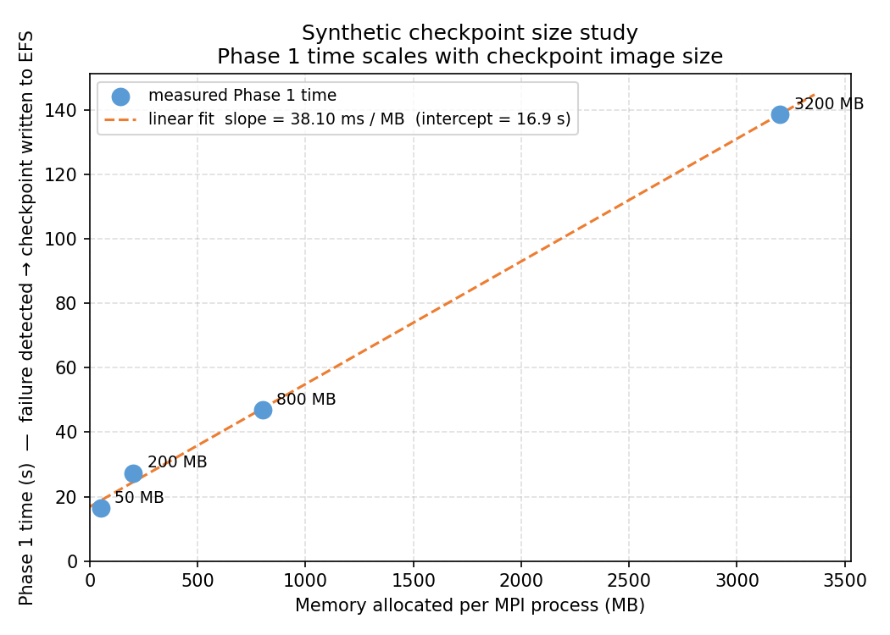
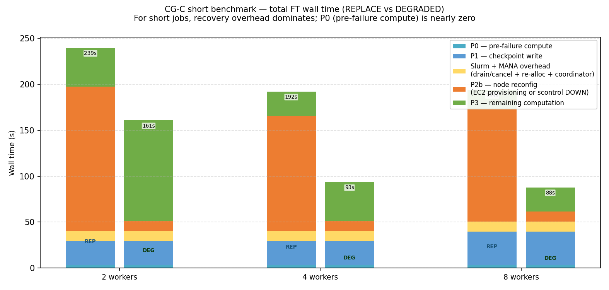
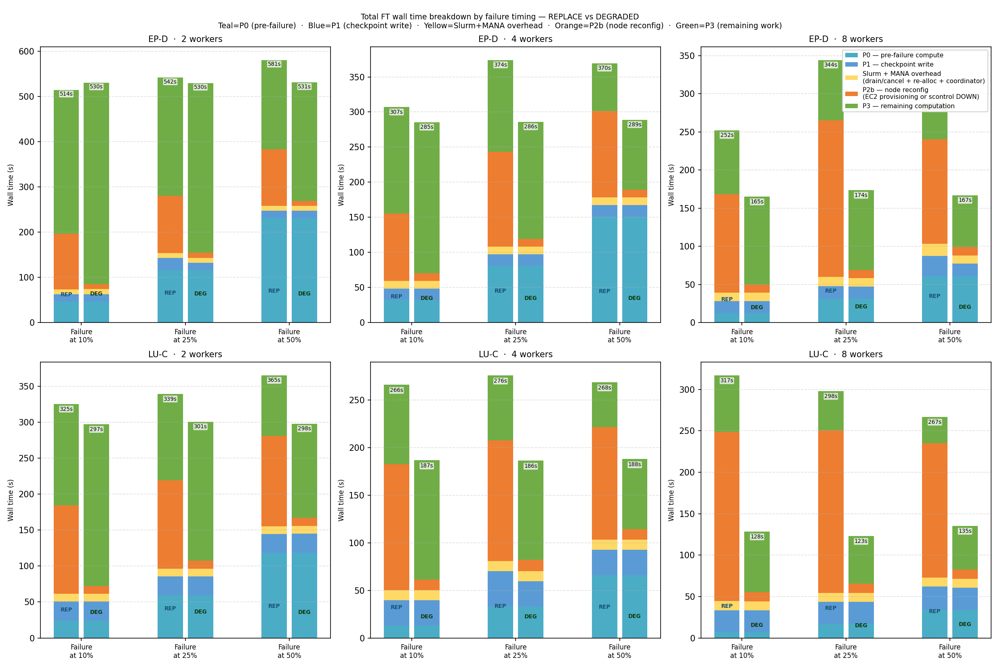
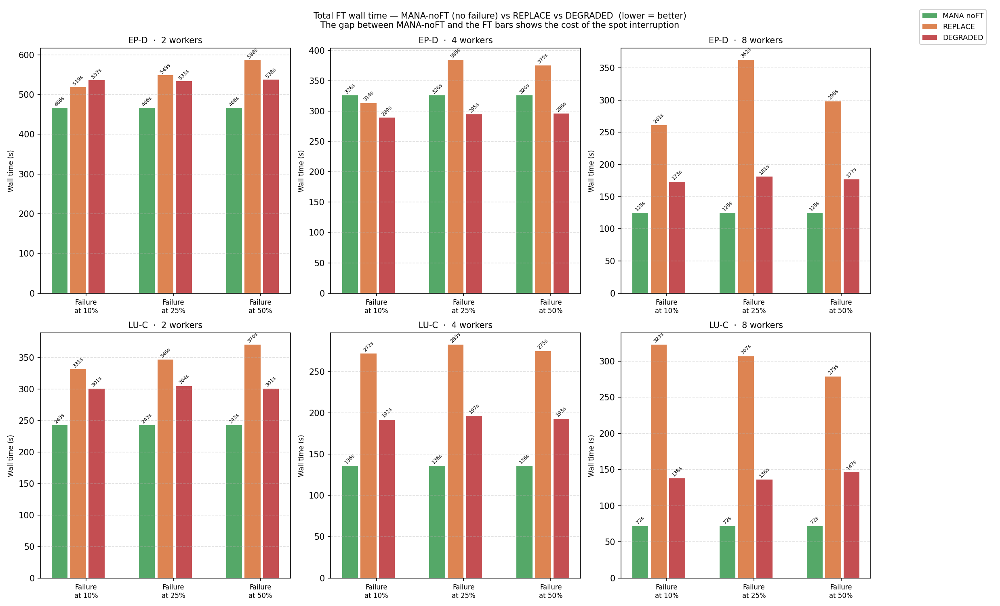
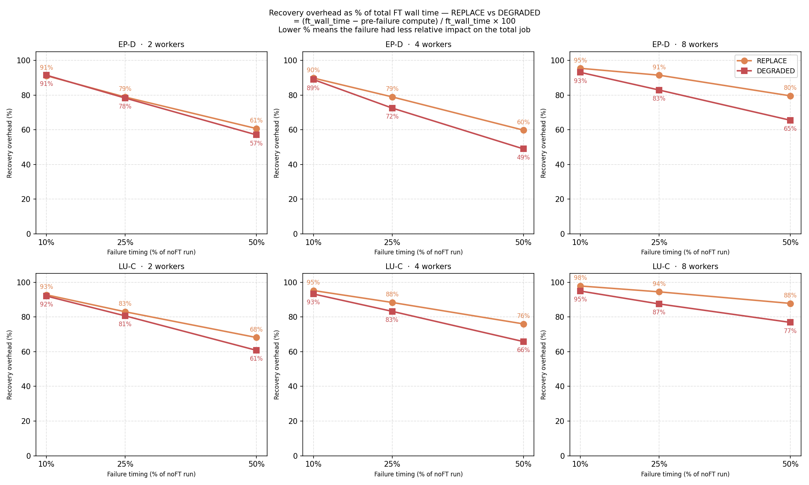
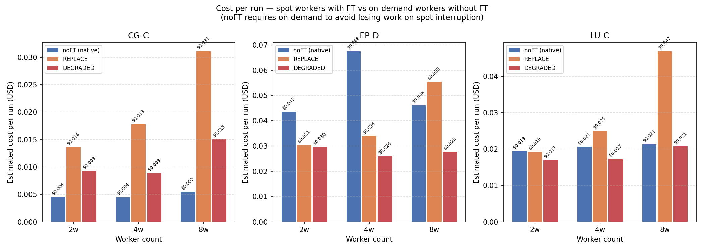

This report presents the complete Phase 5 experimental results. Phase 5 extends the Phase 4 pilot campaign in three directions:
| Study | Purpose | Runs |
|---|---|---|
| 5.1 Synthetic MPI overhead | Isolate whether call frequency or communication imbalance drives MANA overhead | 30 |
| 5.2 Synthetic checkpoint size | Quantify how checkpoint image size drives Phase 1 (detect → checkpoint) time | 4 |
| 5.3 Failure timing sensitivity | Measure how failure position in the job lifecycle affects REPLACE vs DEGRADED trade-off | 36 |
| Baselines (Phase 4 redo) | noFT and MANA-noFT for all 3 benchmarks × 3 cluster sizes with new instrumentation | 24 |
Total: 94 successful runs. All results were collected on AWS m5.xlarge spot workers
(4 vCPUs, 16 GB RAM) in us-west-2. The head node was a t3.large on-demand instance.
Each run used the auto_test_failure mechanism for reproducible failure injection.
New in Phase 5: the recovery now instruments three sub-phases of Phase 2:
scontrol DOWN for DEGRADED (~11 s)
Table 1 — MANA overhead (MANA-noFT vs noFT wall time):
| Benchmark | 2 workers | 4 workers | 8 workers |
|---|---|---|---|
| CG-C | +233% (anomalous — see §2.1) | +59% | +73% |
| EP-D | +39% (single run — see §2.2) | +14% | +22% |
| LU-C | +62% | +56% | +52% |
CG at 2 workers shows 233% overhead (34.6 s → 115.2 s), while the same benchmark at 4 workers shows only 59% (18.7 s → 29.7 s). This 6× absolute difference in added overhead (80.6 s vs 11.0 s) is physically inconsistent with a benchmark that communicates more per process at higher core counts.
The hypothesis developed from the synthetic studies (Section 4) is that CG Class C
partitions its sparse matrix unevenly across 4 MPI processes at 2 workers, causing one
process to be consistently slower on every iteration. The others must spin in MANA's
MPI_Wait lock loop waiting for that slow partner — and that spin loop burns CPU shared
with the slow process, making it slower still. This cascade amplifies over CG's 75
conjugate-gradient iterations. At 4 and 8 workers, the matrix partitions differently
and the bottleneck does not appear. Confirming this would require per-rank timing
instrumentation inside the benchmark, which is outside the scope of this work.
EP-D at 2 workers shows 39% overhead (335.0 s → 466.5 s). While real, this figure is unreliable: EP uses only collective operations (MPI_Allreduce/Reduce) with no P2P communication, so MANA's overhead should be small and roughly constant. The 131-second absolute overhead at 2w — compared to 40 s at 4w and 23 s at 8w — points to EC2 infrastructure noise on a single long-duration run rather than a reproducible MANA effect. EP data should not be used to characterize MANA's overhead mechanism.
LU-C shows the most consistent and interpretable results: 62% at 2w, 56% at 4w, 52% at 8w. The slight decrease with more workers is consistent with MANA's fixed per-process costs being distributed across more parallel computation. LU is the best benchmark for overhead characterization: structured communication, stable runtime, reproducible across runs.

Table 2 — Wall time (seconds) vs worker count, noFT and MANA-noFT:
| Benchmark | noFT 2w | noFT 4w | noFT 8w | Speedup 2→8 | MANA 2w | MANA 4w | MANA 8w |
|---|---|---|---|---|---|---|---|
| CG-C | 34.6 | 18.7 | 12.1 | 2.9× | 115.2 | 29.7 | 20.9 |
| EP-D | 335.0 | 285.8 | 102.3 | 3.3× | 466.5 | 325.9 | 124.9 |
| LU-C | 149.8 | 87.3 | 47.4 | 3.2× | 242.6 | 136.0 | 71.9 |
All three benchmarks scale sub-linearly from 2 to 8 workers (ideal would be 4×). EP and LU reach 3.2–3.3× speedup, which is reasonable for memory-bound MPI applications at small cluster sizes. CG's lower scaling (2.9×) reflects its irregular communication pattern.
MANA-noFT follows the same scaling trend as noFT: the MANA overhead does not worsen disproportionately at higher worker counts. This is a positive result — MANA's checkpoint infrastructure does not introduce a communication bottleneck when the cluster scales.

Two synthetic programs were designed to isolate the effect of MPI call frequency on MANA
overhead: synth_calls (using MPI_Allreduce) and synth_p2p (using synchronized
MPI_Send/MPI_Recv pairs). Both ran for ~60 s natively across five call levels.
Table 3 — MANA overhead (added seconds) vs call count:
| Level | Calls | synth_calls overhead | synth_p2p overhead |
|---|---|---|---|
| L0 | 0 | +1.7 s | +3.4 s |
| L1 | 800 | +3.4 s | +3.5 s |
| L2 | 3,200 | +3.3 s | +3.2 s |
| L3 | 12,800 | +2.9 s | +2.7 s |
| L4 | 51,200 | +0.7 s | +0.8 s |
Finding: MANA overhead is flat (~3 s) across all call levels and actually decreases at L4. Call count is not the driver of MANA overhead. The overhead comes from fixed DMTCP infrastructure costs (coordinator handshake, checkpoint-enable/disable wrappers at init/exit) rather than per-call interception.
Why synth_p2p is also flat: Both partners reach their MPI_Send/MPI_Recv exchange at the same moment (perfectly synchronized). The message arrives within the first of MANA's 1,000 Iprobe iterations, so the 1 ms sleep-and-retry path never fires. This is a best-case scenario that does not represent CG or LU behavior, where computation time between communication rounds causes partners to be temporally misaligned.
A third synthetic program, synth_imbalanced, uses the same MPI_Irecv + MPI_Wait
code path as CG and LU, but introduces a controlled sender delay so the receiver must
spin in MANA's MPI_Wait loop. The overhead result was unexpected:
Table 4 — synth_imbalanced results:
| Level | Delay/exchange | Accum. wait | noFT elapsed | MANA elapsed | Overhead |
|---|---|---|---|---|---|
| L0 | 0 µs | 0 s | 60.7 s | 64.2 s | +3.4 s |
| L1 | 100 µs | 0.08 s | 60.8 s | 64.3 s | +3.5 s |
| L2 | 1 ms | 0.8 s | 61.5 s | 64.5 s | +2.9 s |
| L3 | 5 ms | 4.0 s | 64.7 s | 64.7 s | ≈ 0 s |
| L4 | 20 ms | 16.0 s | 76.7 s | 78.8 s | +2.0 s |
Finding: Even with explicit MPI_Wait spin, overhead does not grow proportionally with wait duration. At L3 and L4, the noFT run itself slows down because the sender spends more time sleeping — so MANA's fixed ~3.4 s floor is absorbed by the slower baseline. The spin loop burns CPU but does not extend the wait beyond the sender's sleep.
What this means for CG 2w: All three synthetic tests converge on the same conclusion: MANA adds a fixed ~3–5 s overhead for isolated synthetic programs regardless of call count, call type, or communication imbalance. CG's 80 s overhead at 2w cannot be explained by any single isolated variable. The most plausible mechanism is a computation–communication cascade: MANA's per-call wrapper cost slightly slows computation, causing one process to send later, causing its partner to wait in MPI_Wait, burning CPU that the slow process was using, slowing it further — amplified over 75 CG iterations. The synthetic tests cannot replicate this because the sender delay is external (usleep) rather than compute-driven, and senders/receivers run on separate nodes with no CPU competition.

A fourth synthetic program allocated a known memory footprint per MPI process and was then checkpointed under MANA to measure Phase 1 (detect → checkpoint ready) directly.
Table 5 — Phase 1 and Phase 2 times vs memory per process:
| Memory/process | Phase 1 (s) | Phase 2 (s) | Notes |
|---|---|---|---|
| 50 MB | 16.4 s | 21.6 s | Fixed overhead dominates |
| 200 MB | 27.3 s | 22.0 s | Linear regime begins |
| 800 MB | 47.0 s | 21.7 s | Proportional to size |
| 3,200 MB | 138.7 s | 21.6 s | EFS write bandwidth limit |
Finding 1: Phase 1 scales non-linearly with memory. Small images (50 MB) are dominated by a fixed startup cost (~16 s), making the relationship sub-linear at small sizes. Large images (3,200 MB) show that EFS write bandwidth saturates, causing super-linear growth per MB.
Finding 2: Phase 2 is constant at ~21.6 s regardless of checkpoint size. This is the Slurm reconfiguration floor: drain + cancel (~5.5 s) + scontrol DOWN (~10 s) + new Slurm allocation + MANA coordinator setup (~5.3 s). This lower bound cannot be reduced without changing the Slurm orchestration strategy.
Practical implication for NPB benchmarks: EP-D processes allocate less memory than LU-C, which matches Phase 1 times measured in real FT runs: ~16–17 s for EP vs ~26–37 s for LU and CG. The synthetic study confirms that the difference is memory footprint, not benchmark complexity.

CG-C is excluded from the failure timing sensitivity study because its 10–30 s noFT runtime makes timing variants meaningless. However, it is the clearest illustration of a key structural fact: for short jobs, recovery overhead dominates total wall time.
Table 6 — CG-C FT wall time breakdown (base trigger ~3 s):
| Workers | Strategy | P0 | P1 | Slurm (P2a+P2c) | P2b | P3 | Total |
|---|---|---|---|---|---|---|---|
| 2w | REPLACE | 3.0 s | 26.5 s | 10.8 s | 157.0 s | 42.0 s | 243.8 s |
| 2w | DEGRADED | 3.0 s | 26.4 s | 10.7 s | 10.9 s | 109.5 s | 165.8 s |
| 4w | REPLACE | 3.0 s | 26.6 s | 10.7 s | 125.2 s | 26.4 s | 201.1 s |
| 4w | DEGRADED | 3.0 s | 26.5 s | 11.0 s | 10.9 s | 42.0 s | 100.9 s |
| 8w | REPLACE | 3.0 s | 36.7 s | 10.8 s | 122.1 s | 21.1 s | 203.1 s |
| 8w | DEGRADED | 3.0 s | 36.7 s | 10.8 s | 10.9 s | 26.4 s | 98.3 s |
Key observations:
P2b is the dominant differentiator. REPLACE pays 122–157 s for EC2 provisioning
(terminate → respawn → Slurm IDLE) while DEGRADED pays only ~11 s for scontrol DOWN.
This ~111–146 s gap is the direct cost of the "replace with a new instance" strategy.
DEGRADED wins at all cluster sizes for CG, by 78–105 s. Even though DEGRADED loses 50% capacity at 2w (P3 goes from 42 s to 110 s, +68 s), this is still far less than REPLACE's P2b cost (+146 s).
P2b for REPLACE is nearly constant across worker counts (~122–157 s). This reflects AWS EC2 provisioning latency, which is independent of cluster topology.
P1 increases at 8w (26.5 s → 36.7 s) because more processes = larger total checkpoint image on EFS, consistent with the synthetic checkpoint size study.
For very short jobs like CG (noFT ~12–35 s), the FT overhead is 3–17× the original job duration. MANA-based fault tolerance is most cost-effective for long-running jobs where recovery overhead is a small fraction of total wall time.

This is the central analysis of Phase 5. EP-D and LU-C were each run with failure injected at 10%, 25%, and 50% of the MANA-noFT wall time, at 2, 4, and 8 workers.
Each bar in Figure 4 shows the complete wall time from job start to completion:
Table 7 — EP-D total FT wall time (seconds):
| Workers | Trigger | REPLACE | DEGRADED | Winner |
|---|---|---|---|---|
| 2w | 10% (46 s) | 519 s | 537 s | REPLACE (−18 s) |
| 2w | 25% (116 s) | 549 s | 533 s | DEGRADED (−16 s) |
| 2w | 50% (231 s) | 588 s | 538 s | DEGRADED (−50 s) |
| 4w | 10% (32 s) | 314 s | 289 s | DEGRADED (−25 s) |
| 4w | 25% (81 s) | 385 s | 295 s | DEGRADED (−90 s) |
| 4w | 50% (151 s) | 375 s | 296 s | DEGRADED (−79 s) |
| 8w | avg across timings | 307 s ±51 s | 177 s ±4 s | DEGRADED (≈−130 s) |
EP-D crossover at 2 workers: REPLACE wins only when failure occurs at 10% (early). At 2w, losing one of two workers doubles EP's remaining computation time (P3), since EP is embarrassingly parallel and scales linearly. When the failure happens at 10%, P3 is large (~446 s for DEGRADED vs ~318 s for REPLACE), and DEGRADED's P3 penalty (+128 s) exceeds REPLACE's P2b cost (+123 s). By 25%, P3 is smaller and DEGRADED's penalty shrinks below the P2b gap — DEGRADED wins.
At 4w and 8w, DEGRADED wins at all timing points. Losing 1 of 4 workers costs 33% extra computation time; losing 1 of 8 costs only 14%. REPLACE's ~123–157 s P2b is never recouped by the savings in P3.
Table 8 — LU-C total FT wall time (seconds, averaged across 3 runs per cell):
| Workers | Strategy | 10% avg | 25% avg | 50% avg | DEGRADED advantage |
|---|---|---|---|---|---|
| 2w | REPLACE | ~370 s | ~349 s | ~329 s | — |
| 2w | DEGRADED | ~305 s | ~302 s | ~299 s | −44 to −65 s |
| 4w | REPLACE | ~278 s | ~277 s | ~274 s | — |
| 4w | DEGRADED | ~197 s | ~194 s | ~191 s | −80 to −87 s |
| 8w | REPLACE | ~325 s | ~303 s | ~280 s | — |
| 8w | DEGRADED | ~146 s | ~140 s | ~134 s | −146 to −163 s |
LU-C shows no crossover at any tested configuration. DEGRADED wins at 2w, 4w, and 8w for all three timing points. Unlike EP, LU has a structured iterative communication pattern (nearest-neighbor stencil), which means the DEGRADED P3 penalty for losing one worker is partially offset by better cache locality with fewer processes.
At 8w, DEGRADED wins by up to 163 s — losing 1 of 8 workers is nearly negligible in terms of remaining computation, while REPLACE still pays the full ~122–188 s EC2 cost.
As the failure trigger moves from 10% to 50% of the job, P3 (remaining computation) decreases for both strategies — this is the expected result: less work remains.
However, the P3 gap between REPLACE and DEGRADED also changes with timing:
The crossover condition is: REPLACE wins when P2b_REPLACE − P2b_DEGRADED < P3_DEGRADED − P3_REPLACE,
i.e., when the extra computation time from losing a worker exceeds the EC2 provisioning
savings. This only holds at 2 workers with EP (high P3 from embarrassingly-parallel
scaling) and only at the earliest failure timing.

Figure 8 adds the MANA-noFT bar (no failure injected) as a reference baseline in each group. The gap between MANA-noFT and the FT bars represents the total cost of the spot interruption and recovery.
Table 9 — Summary: which strategy wins across all configurations:
| Benchmark | Workers | 10% | 25% | 50% | MANA-noFT baseline |
|---|---|---|---|---|---|
| EP-D | 2w | REPLACE | DEGRADED | DEGRADED | 466 s |
| EP-D | 4w | DEGRADED | DEGRADED | DEGRADED | 326 s |
| EP-D | 8w | DEGRADED | DEGRADED | DEGRADED | 125 s |
| LU-C | 2w | DEGRADED | DEGRADED | DEGRADED | 243 s |
| LU-C | 4w | DEGRADED | DEGRADED | DEGRADED | 136 s |
| LU-C | 8w | DEGRADED | DEGRADED | DEGRADED | 72 s |
DEGRADED wins in 17 out of 18 tested configurations. The single exception is EP-D at
2 workers with a very early failure (10% of run time). In all other cases, the 11-second
P2b cost of scontrol DOWN is far better than the 122–157-second EC2 provisioning time.

The recovery overhead ratio measures what fraction of total FT wall time was caused by the failure and its recovery — everything except the pre-failure computation (P0):
recovery_overhead_pct = (ft_wall_time − P0) / ft_wall_time × 100
Table 10 — Recovery overhead as % of total FT wall time (EP-D):
| Workers | Strategy | 10% | 25% | 50% |
|---|---|---|---|---|
| 2w | REPLACE | 91% | 79% | 61% |
| 2w | DEGRADED | 91% | 78% | 57% |
| 4w | REPLACE | 90% | 79% | 60% |
| 4w | DEGRADED | 89% | 72% | 49% |
| 8w | REPLACE | 93% | 88% | 82% |
| 8w | DEGRADED | 93% | 82% | 65% |
Key observations:
Early failure → high overhead ratio for both strategies. When failure fires at 10%, recovery accounts for ~90% of total wall time regardless of strategy. This is expected: P0 is small and P3 dominates, padded by recovery costs.
Later failure → lower overhead ratio. At 50% trigger, DEGRADED at 4w recovers with only 49% overhead — meaning more than half the total wall time is actual productive computation.
At 8w, REPLACE overhead stays above 80% even at 50%. The fixed EC2 provisioning cost (~155 s for LU-8w) represents a large fraction of a short total job (72 s noFT). This is a fundamental limitation: for short jobs on large clusters, REPLACE becomes increasingly expensive relative to job duration.
DEGRADED and REPLACE have nearly identical overhead at 10% for all configurations. The difference only becomes visible at 25% and 50%, where REPLACE's larger P2b contributes more to the remaining fraction.

Table 11 — Estimated cost per run (USD), representative runs:
| Benchmark | Workers | noFT on-demand | REPLACE (spot) | DEGRADED (spot) | DEGRADED saving vs noFT |
|---|---|---|---|---|---|
| CG-C | 2w | $0.0045 | $0.0136 | $0.0092 | −$0.0000 (FT costs more — expected for very short jobs) |
| CG-C | 4w | $0.0044 | $0.0177 | $0.0089 | −$0.0000 (same) |
| EP-D | 2w | $0.0435 | $0.0307 | $0.0298 | −31% (saves $0.0137) |
| EP-D | 4w | $0.0676 | $0.0315 | $0.0259 | −62% (saves $0.0417) |
| EP-D | 8w | $0.1244 | $0.0470 | $0.0271 | −78% (saves $0.0973) |
| LU-C | 2w | $0.0166 | $0.0194 | $0.0168 | −1% (marginal) |
| LU-C | 4w | $0.0309 | $0.0244 | $0.0171 | −45% (saves $0.0138) |
| LU-C | 8w | $0.0547 | $0.0463 | $0.0215 | −61% (saves $0.0332) |
The cost model assumes:
Key findings:
CG-C is the exception that proves the rule: The FT strategies cost more than noFT on-demand because CG is so short (~10–35 s) that recovery overhead (103–202 s) dwarfs the original job. Spot pricing discounts do not compensate. MANA-based FT is not economically justified for very short jobs.
For EP and LU at 4 and 8 workers, spot + FT (DEGRADED) saves 45–78% vs on-demand + noFT. This is the primary economic justification for the approach: even accounting for the recovery overhead, the 70% spot discount on worker costs dominates for jobs that take more than a few minutes.
DEGRADED is consistently cheaper than REPLACE because it completes faster (lower P2b), spending less time on all instance-hour billing. The savings range from $0.002 (CG, negligible) to $0.020 (EP-8w, significant).
The 8-worker configurations show the strongest economic case for spot + FT: more workers means more spot savings, and with DEGRADED the recovery is fast enough that the total runtime (and cost) stays well below the on-demand baseline.
| Scenario | Recommended strategy | Reason |
|---|---|---|
| Short job (< 1–2 min noFT) | Neither — noFT on-demand may be preferable | Recovery overhead dominates; spot savings don't cover FT cost |
| Long job, ≥ 4 workers | DEGRADED | Capacity loss per failure is ≤ 25%; P2b advantage is decisive |
| Long job, 2 workers, early failure likely | REPLACE (marginal) | Only if failure timing is consistently < 15% of run |
| Long job, 2 workers, failure timing unknown | DEGRADED | Wins at 25% and 50%; EP edge case is narrow |
| Economic priority (cost/run) | DEGRADED | Lower P2b → less wall time → less instance-hour billing |
Report generated from 94 valid runs collected 2026-05-30 to 2026-06-03.
All figures generated by TCC/analyze.py. Raw data: results_raw.csv. Aggregated stats: summary.md.